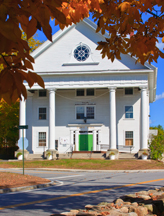
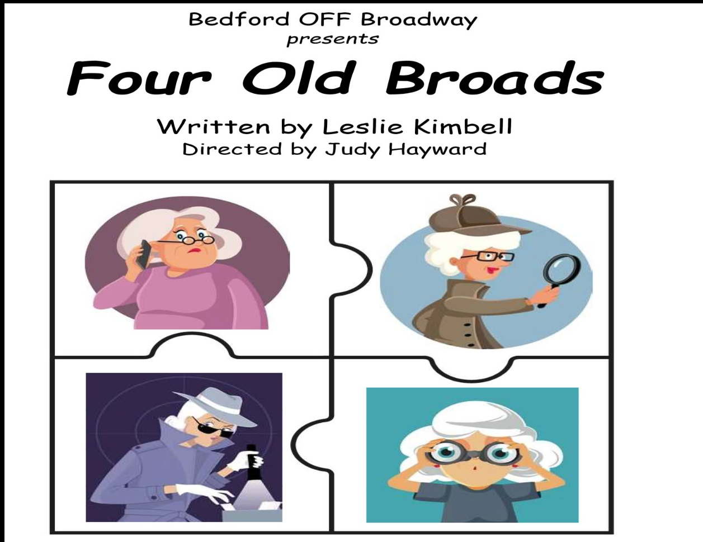

From the North: Follow I-293 South to the Bedford exit which is Route 101 West,
From the South: Follow I-93 North or the Everett Turnpike to the Bedford exit which is Route 101 west.
From the East: Follow Route 101 West to Bedford.
From All Three Directions: At the first traffic light on Route 101 West(the intersection with Route 114), turn left and continue to follow 101 West to the third traffic light. Turn right onto Meetinghouse Road. The Old Town Hall will be on your right at the next intersection at Bedford Center Road.
From the West: Follow Route 101 east to Meetinhouse Road. Turn left at the traffic light onto Meetinghouse Road. The Old Town Hall will be on your right at the next intersection at Bedford Center Road.

About the auditions
FOUR OLD BROADS auditions
Auditions: Bedford Off Broadway ,a community theater group in Bedford NH, is excited to announce auditions for “Four Old Broads” by Leslie Kimbell and directed by Judy Hayward. Rehearsals are Sunday afternoons, Monday and Wednesday night Show dates are March 5, 6, 7, 12, 13 ,14 with tech starting on Sunday, February 28.<uditions held in Bedford, 3 Meetinghouse Road:
Sun., Dec. 6 – 1:30 – 3:00
Mon., Dec. 7 -- 6:30 - 8:00
Wed., Dec. 9 -- callbacks if necessary 6:30
Don't let the title fool you. Like the synopsis says--these are NOT your typical four old broads!
Synopsis: Life has not been pleasant at the Magnolia Place Assisted Living in Georgia. Four sassy residents get into a whole lot of trouble as they find themselves thrown into solving a dangerous mystery. Hilarity ensues through loads of naughty laughter, happy tears, and even an Elvis impersonator. One thing is certain—these are not your typical four old broads!Cast (NOTE: Ages given are the CHARACTER'S ages):
Beatrice Shelton – (50+) Former Burlesque star with a potty mouth and an attitudeImogene Fletcher – (50+) Sassy with a memory problem
Maude Jenkins – (50+) Sweet but a frumpy mess
Eaddy May Clayton – (50+) Former nurse and very saintly
Pat Jones – 40-50. Rude and pushy nurse. A Villain
Ruby Sue Bennett – 30’s. Nurse who loves romance novels
Sam Smith – (50+) Former Elvis impersonator and Casanova
Cast needs: All roles can be played by younger people through the magic of makeup and wigs!.
“Four Old Broads” by Leslie Kimbell and directed by Judy Hayward
Show dates are March 5, 6, 7, 12, 13 ,14 with tech starting on Sunday, February 28.
PLEASE NOTE: All shows are subject to change
You can follow us on Facebook
Or email us at BedfordOffBroadway@comcast.net to be added to our email list for updates
Bedford Off Broadway
3 Meetinghouse Road
P.O. Box 10321
Bedford, New Hampshire 03110If you would like to be added to our mailing list or to our email list to receive advance notices of auditions andupcoming plays, please email us at: bedfordoffbroadway@comcast.net